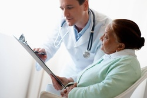
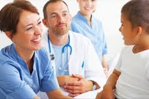
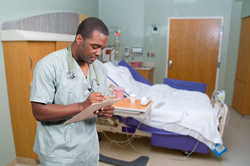
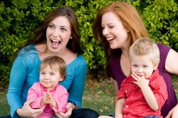

Personal Support Groups
Pittsburgh Center for Complementary Health and Healing
 The Pittsburgh Center for Complementary Health and Healing is an award winning, environmentally friendly wellness spa. Our highly trained wellness team are dedicated to the peace, relaxation and vitality of our clients; body, mind and spirit. Our mission is to positively impact our community through improving the health, wellbeing and quality of life for our clients and the world in which we live.
The Pittsburgh Center for Complementary Health and Healing is an award winning, environmentally friendly wellness spa. Our highly trained wellness team are dedicated to the peace, relaxation and vitality of our clients; body, mind and spirit. Our mission is to positively impact our community through improving the health, wellbeing and quality of life for our clients and the world in which we live.
New Beginnings
Through our Community Advocacy Program, we offer personal support and advocacy to those affected by domestic violence. Participants work toward their own goals. The program serves people who are still with a violent partner, as well as those who have left.
Pittsburgh Group on Health (PBGH)
 The Pittsburgh Business Group on Health (PBGH) is an employer-led, non-profit coalition of organizations representing various business segments including private and public employers, government and education. PBGH represents over 90 organizations and strives to improve the cost, delivery, and value of health care and offers member only and community forums for the exchange of ideas and viewpoints.
Pittsburgh Regional Health Initiative (PRHI)
The Pittsburgh Regional Health Initiative (PRHI) is one of the nation's first regional collaboratives of medical, business and civic leaders organized to address healthcare safety and quality improvements. PRHI's core mission is to show that an unwavering focus on meeting patient needs, and on achieving optimal care outcomes, along with simultaneous dedication to efficiency and zero defects, will create maximum value for the patient and for society.
Allegheny County Medical Society (ACMS)
 Allegheny County Medical Society (ACMS) aims to have a positive impact on healthcare in Allegheny County. ACMS uses the expertise of physicians to ensure patients receive high-quality care both today and for the future. The society is for the larger Pittsburgh area.
Minority Professional Network
 The Minority Professional Network in Pittsburgh provides a premiere web-based interactive global Career, Economic, and Lifestyle Connection marketing portal and resource network for progressive multicultural and women professionals.
West Hills Area Moms Group
 West Hills Area Moms Group (WHAM) is a group of local moms and their children who meet regularly for play dates, moms night out and other social events. We welcome moms from West Hills and Surrounding Area (Moon, Robinson, North Fayette, South Fayette, Sewickley, and North Hills, etc) as well as moms with children of all ages.